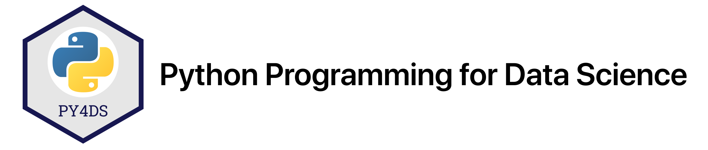

NumPy¶
Tomas Beuzen, September 2020
These exercises complement Chapter 5 and Chapter 6.
Exercises¶
2.¶
Create the following arrays:
Create an array of 5 zeros.
Create an array of 10 ones.
Create an array of 5 3.141s.
Create an array of the integers 1 to 20.
Create a 5 x 5 matrix of ones with a dtype
int.
# Your answer here.
3.¶
Use numpy to:
Create an 3D matrix of 3 x 3 x 3 full of random numbers drawn from a standard normal distribution (hint:
np.random.randn())Reshape the above array into shape (27,)
# Your answer here.
5.¶
Run the following code to create an array of shape 4 x 4 and then use indexing to produce the outputs shown below.
import numpy as np
a = np.arange(1, 26).reshape(5, -1)
20
# Your answer here.
array([[ 9, 10],
[14, 15],
[19, 20],
[24, 25]])
# Your answer here.
array([ 6, 7, 8, 9, 10])
# Your answer here.
array([[11, 12, 13, 14, 15],
[16, 17, 18, 19, 20]])
# Your answer here.
array([[ 8, 9],
[13, 14]])
# Your answer here.
8.¶
Extract all values of a greater than the mean of a (hint: use a boolean mask).
# Your answer here.
9.¶
Find the location of the minimum value in the following array b:
np.random.seed(123)
b = np.random.randn(10)
b
array([-1.0856306 , 0.99734545, 0.2829785 , -1.50629471, -0.57860025,
1.65143654, -2.42667924, -0.42891263, 1.26593626, -0.8667404 ])
# Your answer here.
10.¶
Find the location of the maximum value in the following 2D array c (hint: there are many ways to do this question, but a quick search on stackoverflow.com will typically help you find the optimum solution for a problem, for example see post):
np.random.seed(123)
c = np.random.randn(3, 2)
c
array([[-1.0856306 , 0.99734545],
[ 0.2829785 , -1.50629471],
[-0.57860025, 1.65143654]])
# Your answer here.
Solutions¶
2.¶
Create the following arrays:
Create an array of 5 zeros.
Create an array of 10 ones.
Create an array of 5 3.141s.
Create an array of the integers 1 to 20.
Create a 5 x 5 matrix of ones with a dtype
int.
print(np.zeros(5))
print(np.ones(10))
print(np.full(5, 3.141))
print(np.array(range(21)))
print(np.ones((5, 5), dtype=int))
[0. 0. 0. 0. 0.]
[1. 1. 1. 1. 1. 1. 1. 1. 1. 1.]
[3.141 3.141 3.141 3.141 3.141]
[ 0 1 2 3 4 5 6 7 8 9 10 11 12 13 14 15 16 17 18 19 20]
[[1 1 1 1 1]
[1 1 1 1 1]
[1 1 1 1 1]
[1 1 1 1 1]
[1 1 1 1 1]]
3.¶
Use numpy to:
Create an 3D matrix of 3 x 3 x 3 full of random numbers drawn from a standard normal distribution (hint:
np.random.randn())Reshape the above array into shape (27,)
x = np.random.randn(3, 3, 3)
x
array([[[-2.42667924, -0.42891263, 1.26593626],
[-0.8667404 , -0.67888615, -0.09470897],
[ 1.49138963, -0.638902 , -0.44398196]],
[[-0.43435128, 2.20593008, 2.18678609],
[ 1.0040539 , 0.3861864 , 0.73736858],
[ 1.49073203, -0.93583387, 1.17582904]],
[[-1.25388067, -0.6377515 , 0.9071052 ],
[-1.4286807 , -0.14006872, -0.8617549 ],
[-0.25561937, -2.79858911, -1.7715331 ]]])
x.reshape(-1) # or x.reshape(27)
array([-2.42667924, -0.42891263, 1.26593626, -0.8667404 , -0.67888615,
-0.09470897, 1.49138963, -0.638902 , -0.44398196, -0.43435128,
2.20593008, 2.18678609, 1.0040539 , 0.3861864 , 0.73736858,
1.49073203, -0.93583387, 1.17582904, -1.25388067, -0.6377515 ,
0.9071052 , -1.4286807 , -0.14006872, -0.8617549 , -0.25561937,
-2.79858911, -1.7715331 ])
4.¶
Create an array of 20 linearly spaced numbers between 1 and 10.
np.linspace(1, 10, 20)
array([ 1. , 1.47368421, 1.94736842, 2.42105263, 2.89473684,
3.36842105, 3.84210526, 4.31578947, 4.78947368, 5.26315789,
5.73684211, 6.21052632, 6.68421053, 7.15789474, 7.63157895,
8.10526316, 8.57894737, 9.05263158, 9.52631579, 10. ])
5.¶
Below I’ve defined an array of shape 4 x 4. Use indexing to procude the given outputs.
a = np.arange(1, 26).reshape(5, -1)
a
array([[ 1, 2, 3, 4, 5],
[ 6, 7, 8, 9, 10],
[11, 12, 13, 14, 15],
[16, 17, 18, 19, 20],
[21, 22, 23, 24, 25]])
20
a[3,4]
20
array([[ 9, 10],
[14, 15],
[19, 20],
[24, 25]])
a[1:,3:]
array([[ 9, 10],
[14, 15],
[19, 20],
[24, 25]])
array([ 6, 7, 8, 9, 10])
a[1,:]
array([ 6, 7, 8, 9, 10])
array([[11, 12, 13, 14, 15],
[16, 17, 18, 19, 20]])
array([[ 8, 9],
[13, 14]])
a[1:3,2:4]
array([[ 8, 9],
[13, 14]])
8.¶
Extract all values of a greater than the mean of a (hint: use a boolean mask).
a[a > a.mean()]
array([14, 15, 16, 17, 18, 19, 20, 21, 22, 23, 24, 25])
9.¶
Find the location of the minimum value in the following array b:
np.random.seed(123)
b = np.random.randn(10)
b
array([-1.0856306 , 0.99734545, 0.2829785 , -1.50629471, -0.57860025,
1.65143654, -2.42667924, -0.42891263, 1.26593626, -0.8667404 ])
b.argmin()
6
10.¶
Find the location of the maximum value in the following 2D array c (hint: there are many ways to do this question, but a quick search on stackoverflow.com will typically help you find the optimum solution for a problem, for example see post):
np.random.seed(123)
c = np.random.randn(3, 2)
c
array([[-1.0856306 , 0.99734545],
[ 0.2829785 , -1.50629471],
[-0.57860025, 1.65143654]])
print(f"Location of maximum: {np.unravel_index(c.argmax(), c.shape)}")
print(f" Value of maximum: {c.max():.2f}")
Location of maximum: (2, 1)
Value of maximum: 1.65